NYXIA ONLINE
NYXIA ONLINE
Silahlar
Silahlar 6 kalitede gelir. Kalite arttıkça silah güçlenir ve daha yüksek seviye ister. Aşağıdaki saldırı değeri +0 hâlidir; geliştirdikçe artar.
SıradanNadideNadirDestansıEfsaneviMitik
Warrior silahları
| Silah | Kalite | Seviye | Tür | Element | Saldırı (+0) | |
|---|---|---|---|---|---|---|
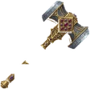 | Ağır Çekiç | Sıradan | 1–15 | Balyoz | Yıldırım | 48 |
| Paslı Kılıç | Sıradan | 1–15 | Kılıç | — | 44 | |
| Demir Balta | Sıradan | 1–15 | Balta | — | 52 | |
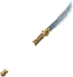 | Yılan Ucu | Nadide | 15–30 | Uzun Mızrak | Zehir | 107 |
| Kırıcı Gürz | Nadide | 15–30 | Balyoz | Yıldırım | 107 | |
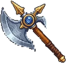 | Kara Diken | Nadir | 30–45 | Uzun Mızrak | Zehir | 127 |
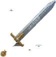 | Ateş Dili | Nadir | 30–45 | Kılıç | Alev | 112 |
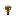 | Totem Topuzu | Nadir | 30–45 | Balyoz | Yıldırım | 117 |
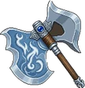 | Ayaz Balta | Destansı | 45–55 | Balta | ice | 117 |
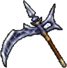 | Yırtıcı Pençe | Efsanevi | 55–65 | Uzun Mızrak | Zehir | 137 |
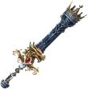 | Serap | Efsanevi | 55–65 | Kılıç | Alev | 123 |
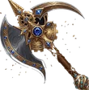 | Şimşek Yumruğu | Efsanevi | 55–65 | Balyoz | Yıldırım | 130 |
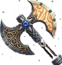 | Gökdev Baltası *Devlerin dövdüğü bu balta, tek elle savrulacak kadar hafif değil — ama onu kaldırabilen için yıldırım kadar hızlı düşer.* | Mitik | 60–65 | Balta | Yıldırım | 134 |
| Buzul Kıran *Bir zamanlar bir kralın elindeydi — şimdi onu ancak bir kral kadar güçlü olan kaldırabilir.* | Mitik | 60–65 | Balta | ice | 134 | |
| Fırtına Ustası *Fırtınanın kendisinden dövülmüş — her savuruşunda gökyüzü bir an için susar.* | Mitik | 60–65 | Kılıç | Yıldırım | 134 | |
| Cehennem Kıran *Cehennemin kendi demirhanesinde dövüldü — her darbesi bir ruhu daha söndürür.* | Mitik | 60–65 | Balyoz | Alev | 131 | |
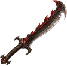 | Közdiş Közle sertleşmiş çentikli ağız. Güç odaklı yakın dövüş kılıcı. | Nadide | — | Kılıç | Alev | — |
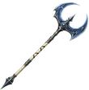 | Gökyarık Geniş hilal başlı uzun balta. Can ve mana arasında dengeli yapı. | Destansı | — | Balta | Yıldırım | — |
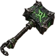 | Mezarkıran Ağır taş başlığıyla dayanıklılığı destekleyen savaş çekici. | Destansı | — | Balyoz | Zehir | — |
Rogue (Okçu) silahları
| Silah | Kalite | Seviye | Tür | Element | Saldırı (+0) | |
|---|---|---|---|---|---|---|
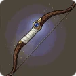 | Avcı Yayı | Sıradan | 1–15 | Yay | Zehir | 8 |
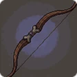 | Bambu Yay | Sıradan | 1–15 | Yay | Zehir | 15 |
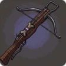 | Arbalet | Nadide | 15–30 | Yay | Zehir | 63 |
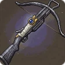 | Boynuz Arbalet | Nadide | 15–30 | Yay | Zehir | 74 |
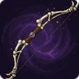 | Demir Arbalet | Nadir | 30–45 | Yay | Zehir | 84 |
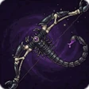 | Zehir Dikeni | Destansı | 45–55 | Yay | Zehir | 71 |
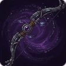 | Çelik Yay | Efsanevi | 55–65 | Yay | Zehir | 93 |
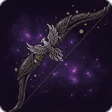 | Köz Yayı | Mitik | 60–65 | Yay | Alev | 101 |
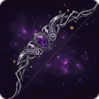 | Yıldırım Teli | Mitik | 60–65 | Yay | Yıldırım | 91 |
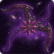 | Kartal Bakışı | Mitik | 60–65 | Yay | Zehir | 95 |
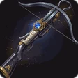 | Ayaz Yayı | Mitik | 60–65 | Yay | ice | 95 |
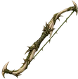 | Çalıpençe Kısa dikenli gövdesiyle hafif bir başlangıç yayı. | Sıradan | — | Yay | Zehir | — |
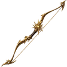 | Şafak Teli Uzun altın renkli kolları ve mana desteğiyle av yayı. | Nadide | — | Yay | — | — |
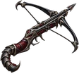 | Akrep İğnesi Dar çelik kolları ve akrep biçimli gövdesiyle saldırı odaklı arbalet. | Nadir | — | Yay | Zehir | — |
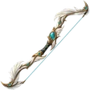 | Yelkanat Tüy biçimli kollarıyla can desteği sunan yay. | Nadir | — | Yay | Yıldırım | — |
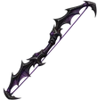 | Gece Kirişi Keskin açılı obsidyen kolları olan mana destekli savaş yayı. | Destansı | — | Yay | ice | — |
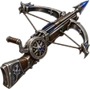 | Gökzıpkın Yuvarlak kurma mekanizmalı, can destekli ağır arbalet. | Destansı | — | Yay | Yıldırım | — |
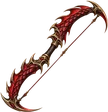 | Kızıl Hilal Ejder pulu kollarıyla yüksek saldırılı kızıl savaş yayı. | Efsanevi | — | Yay | Alev | — |
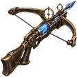 | Fırtına Gözü Halka nişangâhlı, can ve mana destekli mekanik arbalet. | Efsanevi | — | Yay | Yıldırım | — |
Mage silahları
| Silah | Kalite | Seviye | Tür | Element | Saldırı (+0) | |
|---|---|---|---|---|---|---|
| Tahta Asa | Sıradan | 1–15 | Asa | — | 10 | |
| Çırak Asası | Sıradan | 1–15 | Asa | — | 13 | |
| Demir Uçlu Asa | Nadide | 15–25 | Asa | — | 65 | |
| İpek Sarılı Asa | Nadir | 25–40 | Asa | — | 85 | |
| Kızıl Rün Asası | Destansı | 40–60 | Asa | — | 105 | |
| Kabuk Dokuma Asa | Efsanevi | 60–65 | Asa | — | 120 | |
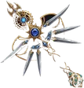 | Kavurucu Asa | Mitik | 60–65 | Asa | Alev | 87 |
| Buzvaha Asası | Mitik | 60–65 | Asa | ice | 87 | |
| Kaos Asası | Mitik | 60–65 | Asa | Yıldırım | 87 | |
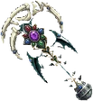 | Cehennem Kanı | Mitik | 60–65 | Asa | Alev | 95 |
| Cennetbahçe | Mitik | 60–65 | Asa | Yıldırım | 95 | |
| Poyraz | Mitik | 60–65 | Asa | ice | 95 | |
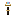 | Gökkuşağı Asası | Mitik | 60–65 | Asa | — | 85 |
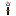 | Kadim Asa | Mitik | 60–65 | Asa | — | 60 |
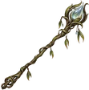 | Çiydalı Şeffaf çiy damlası başlığıyla can ve mana desteği sağlar. | Sıradan | — | Asa | ice | — |
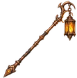 | Kor Feneri Alev taşıyan fener başlığıyla saldırı ağırlıklı asa. | Nadide | — | Asa | Alev | — |
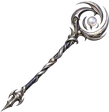 | Ay Sarmalı Spiral ay başlığıyla geniş mana desteği sunar. | Nadide | — | Asa | ice | — |
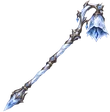 | Buz Çanı Kristal çan başlığıyla can odaklı buz asası. | Nadir | — | Asa | ice | — |
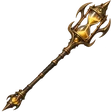 | Kum Saati Altın kum dolu başlığıyla mana odaklı asa. | Nadir | — | Asa | — | — |
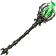 | Ruh Feneri Kafes başlığı içindeki ruh ışığıyla can desteği sunar. | Destansı | — | Asa | Zehir | — |
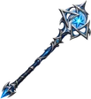 | Gök Mührü Üç iç içe mühür başlığıyla yüksek saldırılı asa. | Destansı | — | Asa | Yıldırım | — |
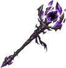 | Hiçlik Tacı Parçalı taç başlığıyla yüksek mana desteği sunar. | Efsanevi | — | Asa | — | — |
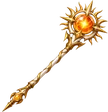 | Güneş Çekirdeği Işın biçimli başlığıyla saldırı ve mana arasında dengeli asa. | Efsanevi | — | Asa | Alev | — |